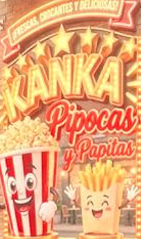
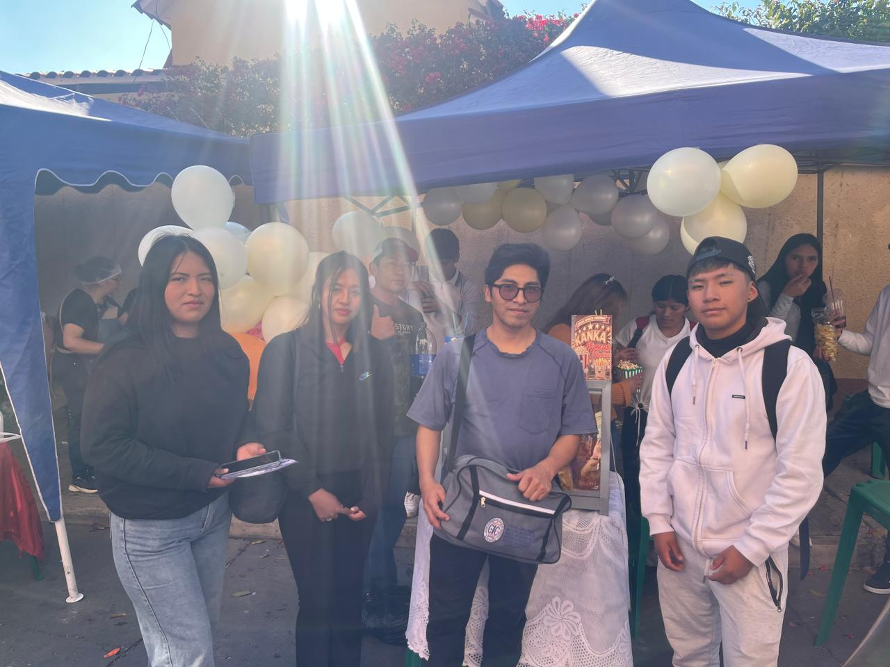
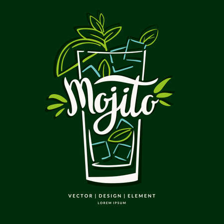
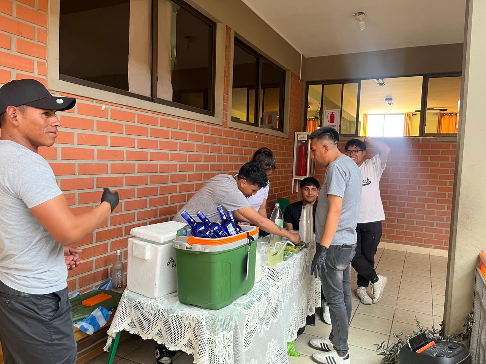
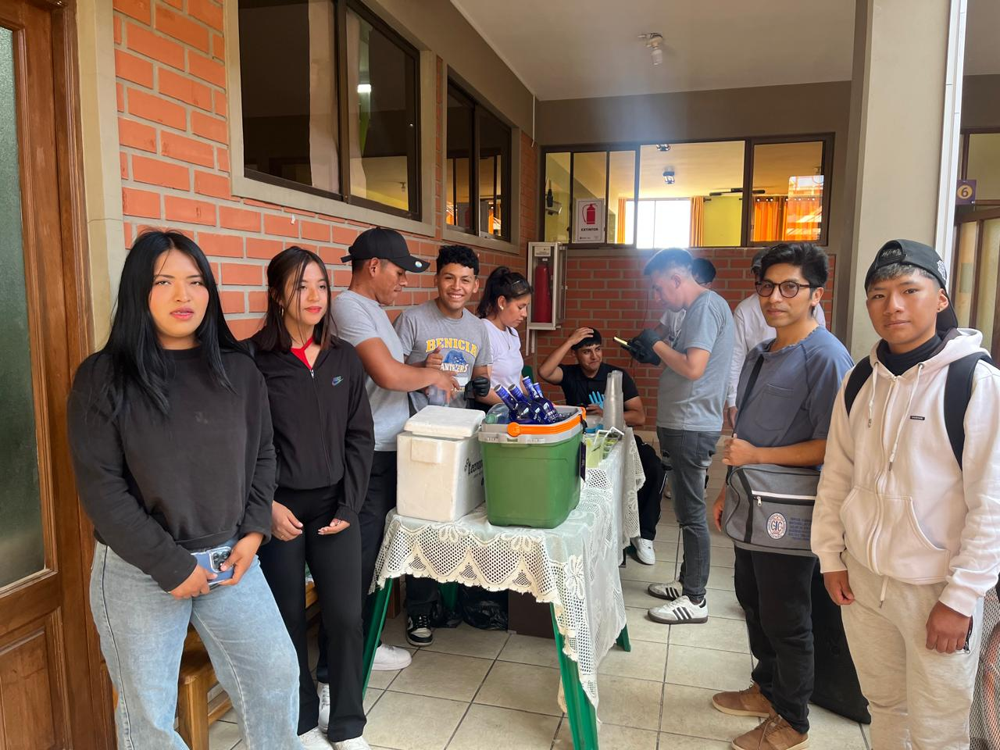
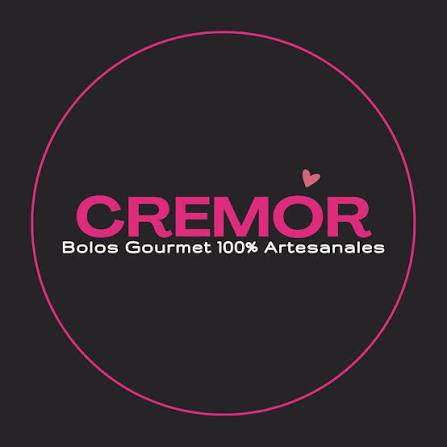
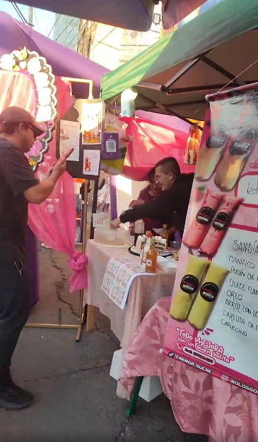
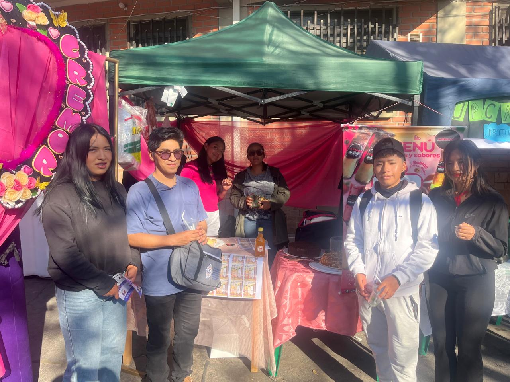

Instituto Técnico Superior de Educación Comercial Sucre
ITSEC SUCRE
CARRERA: Sistemas Informáticos
MATERIA: Diseño y Programación WEB 1
DOCENTE: Ing. Hugo Alfredo Taborga Paz
ESTUDIANTE: Mamani Flores Diego Armando

KANKA
KANKA STAND es un emprendimiento dedicado a la elaboración y comercialización de snacks artesanales de alta calidad.
Oferta de productos
Papas fritas artesanales
Elaboradas para conseguir una textura crocante y dorada.
- Mantequilla: Sabor suave y cremoso.
- Orégano: Aroma herbal y fresco.
- Picante: Sabor intenso y especiado.
Pipocas artesanales
Palomitas preparadas artesanalmente con distintos sabores.
- Dulces: Crujientes y dulces.
- Mantequilla: Sabor clásico.
- Queso: Sabor salado e intenso.



MOJITO
El stand MOJITO ofrece una experiencia de coctelería centrada en la preparación del clásico mojito.
Propuesta de valor
- Preparación en vivo: Técnica de preparación y atención al cliente.
- Ingredientes seleccionados: Hierbas frescas, cítricos, hielo y demás ingredientes.
- Presentación e imagen: Cuidado de la cristalería, higiene y diseño del stand.



CREMOR
CREMOR es una propuesta gastronómica de postres congelados artesanales, especializada en bolos gourmet cremosos.
Descripción del stand
Emprendimiento originado en la pandemia de manera casera realizada por jovenes con la creacion de sabores unicos y deliciosos preparados con ingredientes de primera calidad.
Propuesta de valor
- Base láctea local: Elaboración artesanal con leche seleccionada de Yotala.
- Variedad gourmet: Más de 12 sabores, entre clásicos y creativos.
- Ediciones limitadas: Sabores de temporada y nuevas combinaciones.

